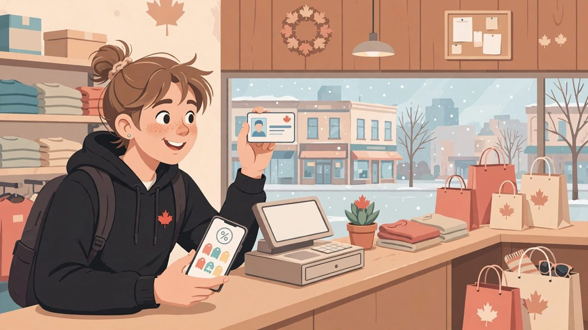

Student discounts for high school teens in Canada: what you can actually claim, and when SPC pays

$11.99 a year is the whole decision. That is the price of a standard SPC membership, checked on the SPC site on November 17, 2026. Pay it only if the stores a teen already uses will return more than $11.99 in a year. Check the free routes first, because for many high school teens the best discount program costs nothing at all, and a few programs that fill roundup lists cannot be claimed by a high school student in the first place.
General information only, this article is not financial advice. For specific financial questions, talk to a qualified professional.
The routes side by side
Student pricing in Canada comes through four different doors, and each door checks something different at the entrance. One checks age and a bank account. One checks enrolment at a college or university. One checks a membership paid by the year. One checks nothing but the card a school already handed out. The table below uses only terms verified on the programs' own pages on November 17, 2026.
| Route | Cost | Who can claim it | What gets checked |
|---|---|---|---|
| SPC+ through CIBC | Free for eligible clients | Canadian residents age 14 or over who hold an eligible CIBC youth or student product | Registration through CIBC online or mobile banking, with the eligible product held at registration |
| Standard SPC | $11.99 per year | Students who buy a membership directly from SPC | Membership in the SPC app, and valid student ID may be required when redeeming an offer |
| UNiDAYS | Free | Students over 16 who attend college or university | A personal institution email address or a credit card style student ID issued by the institution, verified one year at a time |
| School issued student ID alone | Free | Any student the school issued a card to | The merchant decides, at the counter, whether the card and the current term count |
Read the UNiDAYS row carefully, because it is the one most often misread by high school families. UNiDAYS support states that students must be over the age of 16 to qualify, and that qualifying students attend college or university and hold a personal institution email address or a credit card style student ID from that institution. A 16 year old in grade 11 with a high school email address does not meet that wording. A parent cannot fix the gap either, since UNiDAYS states that a parent cannot make an account on behalf of a child, and a child under 16 is not eligible at all.
SPC+ sits at the other end of the table. CIBC states that a student 14 or older with an eligible youth product can register, and its high school page puts the offer plainly for that age group, with savings of up to 30 percent on more than 450 deals. Eligible products include a CIBC youth or student bank account, a student credit card, or a student line of credit. Joint account holders of an eligible product are not eligible, which is a detail worth knowing before a parent assumes a joint account unlocks the perk.
Standard SPC is the paid middle route. SPC states that the standard membership costs $11.99 per year, gives discounts of up to 25 percent at over 450 brands across Canada, and runs for a full 365 days from the date of activation. Up to is the load bearing phrase in that sentence. A discount of up to 25 percent means some offers sit well below that figure, and the break even math below uses 10 percent for exactly that reason.
The break even math at teen spending levels
Dated price check, November 17, 2026: standard SPC costs $11.99 per year, SPC+ costs $0 for eligible CIBC clients, and UNiDAYS costs $0. Those three prices are the only prices the decision needs.
Worked example, with assumptions labelled so the arithmetic can be redone. Assume a teen spends $300 in a year at stores where an SPC offer actually applies, and assume the average discount on that spending is 10 percent, well under the up to 25 percent headline. The saving is $30. Subtract the $11.99 membership and the paid card leaves the teen $18.01 ahead. Now cut the qualifying spending to $100 at the same 10 percent. The saving is $10, which is $1.99 less than the membership cost. The card loses money, quietly, on a teen who bought it with good intentions.
The break even point follows from the same arithmetic. At a 10 percent average discount, a teen needs about $120 of qualifying spending in the year to recover $11.99. At a 15 percent average discount, the figure falls to about $80. At 25 percent, which SPC presents as the top of its range rather than an average, the figure is about $48. A family can redo this in one minute: take last years spending at the two or three stores the teen uses most, apply the discount those stores actually list in the app, and compare the result with $11.99.
SPC publishes larger average savings figures, and those figures deserve a scale check rather than a repeat. The SPC+ page bases an average of up to $343 on an estimated yearly spend of $1,372.21. A high school teen whose total clothing, food, and entertainment spending for a year sits near $300 is not the spender inside that average. The average is not false, it is simply built for a different wallet, and a teen budget should be judged at teen scale.
The free routes change the math completely. SPC+ at $0 needs no break even spending at all, and it carries the larger discount range, up to 30 percent, for eligible CIBC clients. Where a teen already banks at CIBC on an eligible youth product, claiming SPC+ before paying for standard SPC is not a close call. Where a teen banks elsewhere, the comparison is honest in the other direction too: moving banks only for a discount program has its own costs in time and hassle, and the paid card at $11.99 may be the simpler route if the spending clears the break even line.
How to claim, step by step
- List the stores first. Write down the stores and food counters the teen already paid in the last three months. Discounts at stores the teen never visits are worth $0, whatever the percentage says.
- Check the free bank route. If the teen holds an eligible CIBC youth or student product and is 14 or older, create a standard SPC account, then follow the SPC+ page steps and log in through CIBC online banking so the free membership unlocks.
- Check age and school level against UNiDAYS. Only continue if the student is over 16 and attends college or university with an institution email address or institution issued ID. High school students stop here and lose nothing, the route was never open to them.
- Run the break even test before paying. Add the likely qualifying spending for the year, apply the discount shown in the SPC app for those specific stores, and pay the $11.99 only if the result clears $11.99 with room to spare.
- Carry the proof. Keep the school issued student ID available alongside the app, since a store can ask for valid student ID when an offer is redeemed.
- Set a renewal reminder. Standard online memberships are set to auto renew annually, so note the activation date and decide again before the next $11.99 leaves the account.
What success looks like: the teen can name the route they claimed, state what it cost, show the ID a store will ask for, and point to at least one real purchase where the discount returned more than the membership cost.
Traps and fine print
The first trap is the post secondary list wearing a high school headline. Streaming, software, and transit offers aimed at college and university students often carry age floors, enrolment checks, or both. An offer that requires the student to be 18 or to attend an accredited post secondary institution is not a teen discount, however often it appears in a roundup. Read the eligibility line, not the headline percentage, before counting any offer as money saved.
The second trap is spending to earn the fee back. A teen who buys an extra $40 item to reach a satisfying discount total has spent $40 to save perhaps $4. The membership fee is small, and that is exactly why it tempts this error: $11.99 feels worth rescuing. It is not. A discount only counts on spending that was already planned at a price the teen was already willing to pay.
The third trap is the renewal. SPC states that standard $11.99 online memberships are set to auto renew annually, while SPC+ memberships auto renew for free as long as the bank account remains eligible. A paid membership bought for one school year can therefore bill again into a year when the teen barely shops at partner stores. The reminder in step 6 above is the whole defence, and it costs nothing.
The fourth trap is assuming a partner list stands still. SPC describes over 450 brands, and individual offers change as agreements start and end. A store that discounted last term may not discount this term. The current list inside the app is the only version worth planning around, checked on the day of the purchase rather than remembered from a screenshot.
When to skip the paid card
Skip standard SPC if the break even test fails, if the teen already qualifies for free SPC+ through CIBC, or if most teen spending happens at stores with no SPC offer at all, such as a local grocer, a transit system, or second hand shops. Skip every program, free ones included, if claiming it means handing identity documents to a link that arrived in an unsolicited message. Verification starts from the programs own site or app, never from a surprise message.
Buy the paid card only in the narrow case where it earns its keep: no free route is open, the teen's real stores appear in the app with real discounts, and a year of planned spending clears about $120 at a 10 percent average discount with room to spare. Outside that case, the school ID in the teen's pocket, asked about politely at local counters, remains the most underrated discount tool a high school student owns. It costs nothing, it never auto renews, and it works at exactly the scale a teen budget actually runs at.
General information only, this article is not financial advice. For specific financial questions, talk to a qualified professional.